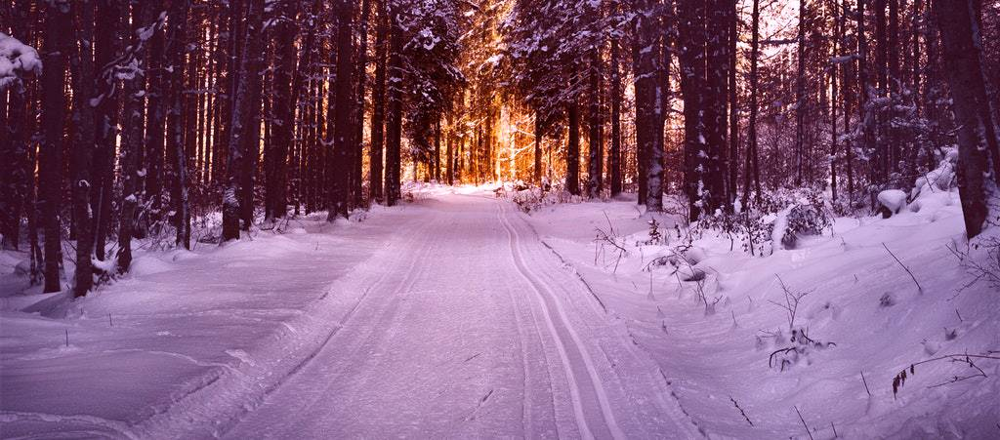

Preston and Lancashire snow and ice warning scaled back by Met Office in updated weather forecast
Preston and Lancashire is being warned to brace for a freezing start to February. The Met Office has updated its warning for snow and ice. From midnight on Tuesday (2 February) the city and the county is expected to see temperatures drop once again. Difficult driving conditions are expected and forecasters say “snow, with a risk of widespread ice, is likely to push slowly northeast during Tuesday, bringing difficult travel conditions.”
Read More... 